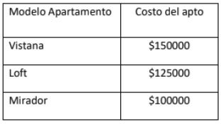
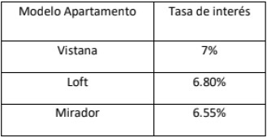

Problematica:
EJERCICIO 1:
Grupo Roble, actualmente se encuentra desarrollando
la torre de apartamentos Panorama Tower, ésta posee tres tipos de apartamentos,
se requiere diseñar una aplicación web que solicite los datos personales del cliente,
salario y si va a comprar el apartamento de contado, o vía crédito.
Compra de Contado:
1. En el caso de comprar el apartamento de contado, debe realizar la pregunta1 y pregunta2, del cuestionario conociendo al cliente.
2.El cliente recibirá descuento del 25% para tipo vistana, 15% para tipo Loft, y 10% para tipo mirador, por realizar la compra de contado.
3.Una vez capturado todos los datos desde un formulario, se debe mostrar, la hoja de compra, esta debe tener:
a.Encabezado.
b.Datos del cliente.
c.Tipo de apartamento.
d.Detalle de la compra:
i.Costo inicial del apartamento.
ii.Descuento otorgado.
iii.Pago final.
Compra al Credito.
1. En el caso de adquirir el apartamento con un crédito, debe realizar completo el “El cuestionario obteniendo datos del cliente”
2.Una vez se posea los datos personales y financieros del cliente, se debe comparar la cuota mensual con el salario del cliente,
si esta es mayor al 20% del salario, no podrá acceder al crédito, caso contrario, se debe mostrar una cotización.
Cuestionario obteniendo los datos del cliente.
1.Favor especificar sus datos personales:
2.1 Nombre, apellido, edad y salario (no puede ser menor de $3500)
2.El cliente debe especificar el tipo del apartamento(el costo del apto se asignará en base al tipo de apto seleccionado)
Los costos que se manejan son los siguientes:

3.El cliente debe especificar qué porcentaje dará en concepto de prima, siendo los siguientes
(10%, 15%, 20%), este debe ser seleccionado de una lista o control checkox o radio button.
4.La tasa de interés que se cobrará al cliente, se asignará en base al modelo de apartamento seleccionado.

5.Indicar el plazo (El cliente seleccionar el plazo desde 1 años hasta 30 años).
Indicar el plazo (El cliente seleccionar el plazo desde 1 años hasta 30 años).
Imprimir un informe estructurado de la siguiente manera:
1.Encabezado de la empresa que vende los apartamentos.
2.Datos generales del cliente.
3.Detalle de la cotización
___________________________________________________________________
✓Modelo de apartamento solicitado:
✓Plazo para cancelar el apartamento:
✓Costo del apartamento: $
✓Monto prima: $
✓Deuda total: $
✓Cuota mensual: $
Nota:
El costo del apartamento debe tomar en cuenta el precio inicial del apto más el interés por los años que le tomará cancelar la propiedad